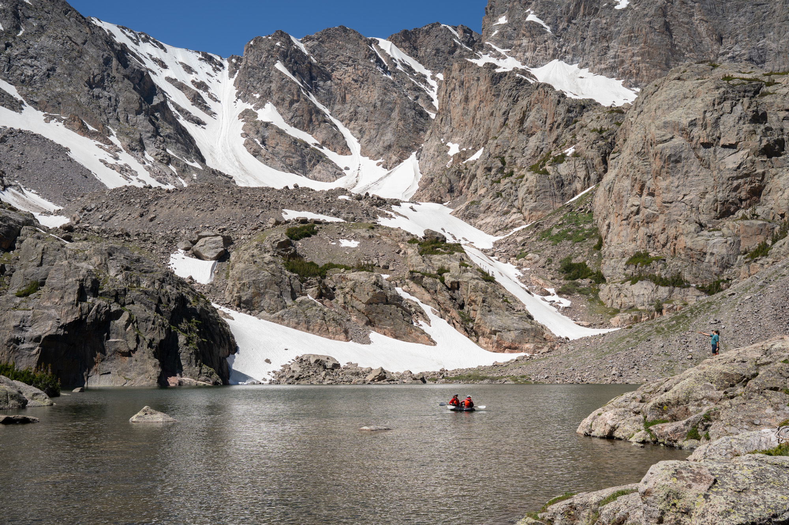

Rocky Mountain National Park, Colorado
Four decades of science in a changing mountain watershed
Since 1982, the Loch Vale Watershed Research Program has tracked how atmospheric pollution, climate variability, and ecological change shape one of Colorado’s most studied high-elevation watersheds.

The research program
A natural laboratory for understanding environmental change
Long-term monitoring makes it possible to distinguish natural variation from lasting changes caused by pollution, climate, and other human influences.
The Loch Vale Watershed is located in Rocky Mountain National Park, Colorado. Ecological research and monitoring began in 1982 and focuses on watershed-scale ecosystem processes, particularly their responses to atmospheric deposition and climate variability.
The program is a cooperative effort among the U.S. Geological Survey, the National Park Service, and Colorado State University. Monitoring of climate, hydrology, precipitation chemistry, and surface-water quality allows researchers to identify long-term trends and better separate natural disturbances from human-caused change.
Research topics include ecological responses to nitrogen deposition, climate variability and change, microbial activity in subalpine and alpine soils, hydrologic flow paths, watershed biogeochemistry, and the response of aquatic organisms to disturbance.

The landscape
From subalpine forest to the Continental Divide
The watershed lies directly east of the Continental Divide and rises from 3,110 meters at the Loch outlet to 4,009 meters at Taylor Peak.
Andrews Creek drains the northern sub-basin, while Icy Brook drains the southern sub-basin. The watershed contains three lakes: The Loch, Lake of Glass, and Sky Pond.
- 83%
- Bare rock, boulder fields, snow, and ice
- 11%
- Alpine tundra
- 5%
- Subalpine forest
- 1%
- Subalpine meadow
A connected ecosystem
Water, rock, snow, forest, and atmosphere
Climate and snow
Snow supplies most of the watershed’s annual precipitation and strongly controls streamflow, nutrient movement, and the length of the growing season.
Atmospheric deposition
Rain, snow, and airborne particles deliver sulfur, nitrogen, and other compounds from both nearby and distant sources.
Watershed chemistry
Water moving through soils and fractured rock carries chemical signals that reveal weathering, biological activity, and environmental stress.
Lake ecology
Changes in temperature, nutrients, ice cover, and water chemistry influence algae, microorganisms, and other aquatic life.
Explore the program
Follow the science from measurements to meaning
Browse the long-term datasets, meet the researchers, read publications, or explore visual stories about acid rain, nitrogen pollution, and climate change.